Gerenciamento de Recursos em Redes SDN
fluxos, QoS, SDN/P4, gerenciamento e os frameworks FLOWPRI-SDN e QCTP
Nilton José Mocelin Júnior1
1 Dept. de Ciência da Computação - DCC
Estágio de Docência · 10 de novembro de 2026
Apresentar-se. Pergunta de abertura para a turma: "quando a videochamada trava, de quem é a culpa?" Deixar 2–3 respostas e seguir. (40 s)
Agenda da Aula
1 Redes de computadores e SDN no mundo real2 Fluxos e Qualidade de Serviço3 Arquitetura SDN: controlador, interfaces, OpenFlow e P44 Gerenciamento de redes: convencional × SDN5 QoS em redes SDN6 FLOWPRI-SDN7 QCTP: levando o QoS ao transporte8 Fechamento Roteiro de 90 min: ~10 min por seção, perguntas no fim. (30 s)
Objetivos da aula
Ao final, você deve saber explicar
por que fluxos disputam recursos e como isso vira atraso, jitter e perda
a diferença entre prioridade e requisito de QoS
planos, interfaces e regras de uma rede SDN (OpenFlow e P4)
como SNMP, NETCONF e NetFlow se relacionam com o SDN … e saber usar
filas HTB e regras meter para reservar banda
marcação DSCP, VLAN e classificação de tráfego
a lógica de um framework de QoS multi-domínio (FLOWPRI-SDN)
a ideia de um transporte que negocia QoS (QCTP) Objetivos de aprendizagem: voltar a eles no resumo final. (1 min)
Redes de computadores e SDN no mundo real
1 Redes de computadores e SDN no mundo real2 Fluxos e Qualidade de Serviço3 Arquitetura SDN: controlador, interfaces, OpenFlow e P44 Gerenciamento de redes: convencional × SDN5 QoS em redes SDN6 FLOWPRI-SDN7 QCTP: levando o QoS ao transporte8 Fechamento Primeiro: por que gerenciar recursos? Porque a rede cresceu e virou infraestrutura crítica.
Crescimento das redes de comunicação
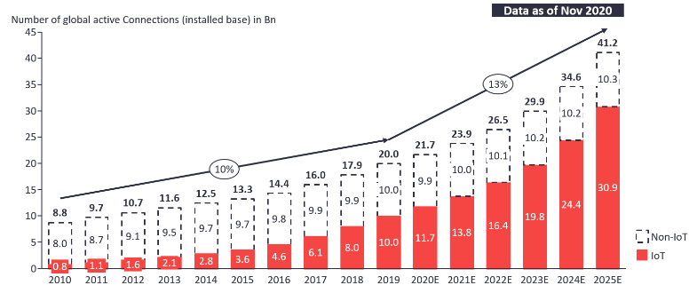
Conexões ativas no mundo, IoT × não-IoT (IoT Analytics, dados até 2020)
Mais dispositivos IoT já supera os dispositivos “tradicionais” — sensores, câmeras, carros, máquinas.
Mais exigência Vídeo, jogos, telemedicina e indústria têm requisitos de atraso e banda.
Mesmos enlaces Todos disputam os mesmos recursos finitos.
O gráfico é de 2020; atualizar o número com o relatório mais recente da IoT Analytics (State of IoT) antes da aula — conferir o valor. A mensagem: mais dispositivos e mais aplicações exigentes no mesmo enlace. (1 min 10)
A Internet: uma rede de redes
Nasce com a ARPANET (1969); hoje interliga dezenas de milhares de Sistemas Autônomos (AS).
AS : conjunto de redes IP sob uma mesma gerência técnica e política de roteamento.ASs trocam rotas com o BGP (RFC 4271).
Relações comerciais: trânsito (pago) e peering (troca de tráfego).
Ninguém controla a Internet inteira — e o QoS também não atravessa domínios sozinho.
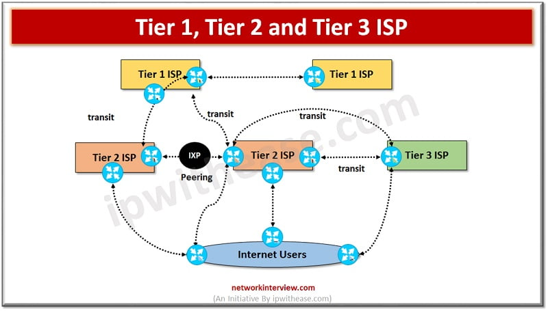
ISPs Tier 1, 2 e 3: trânsito e peering
Corrigido do rascunho: a ARPANET é de 1969. Enfatizar que cada AS tem dono e política própria — é isso que torna o QoS multi-domínio difícil. (1 min 20)
Pontos de troca de tráfego (IXP/PTT)
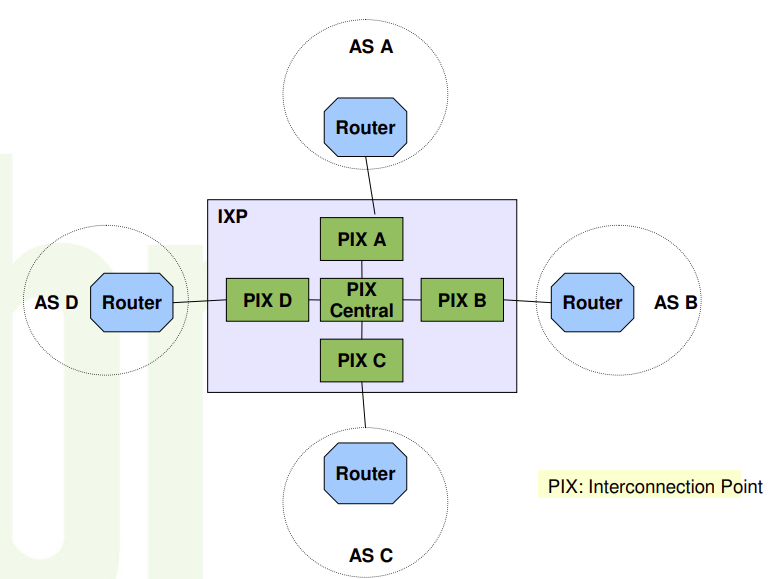
IXP: vários ASs trocam tráfego num ponto comum
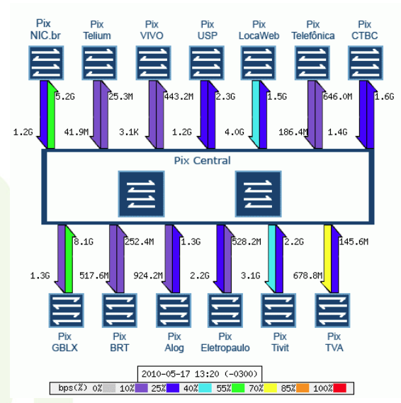
IX.br: matriz de tráfego entre participantes
IXP reduz custo e latência: tráfego local fica local. O IX.br (São Paulo) é um dos maiores do mundo em volume de tráfego. (1 min)
Os provedores de serviço (ISPs)
O que um ISP vende
acesso à Internet (banda contratada)
serviços de e-mail, armazenamento, hospedagem
rotas e canais privados (VPN, MPLS, enlaces dedicados)
coleta de dados e anúncios de serviços
Quem garante a banda que o cliente pagou? Hoje: contrato (SLA) + superdimensionamento.
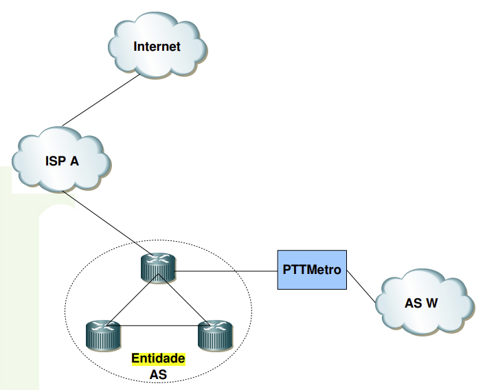
Entidade → ISP → PTT → outros ASs
Gancho para QoS: o cliente paga um SLA, mas raramente consegue verificar se foi cumprido. Isso volta no QoSBlockchain e no QCTP. (1 min)
Tipos de redes
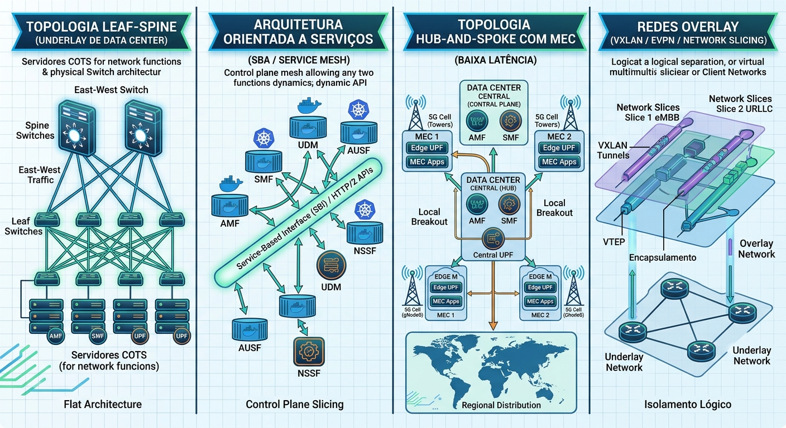
Topologias: leaf-spine (datacenter), arquitetura por serviços, hub-spoke com MEC e overlay
Onde cada uma aparece
Acesso : residencial, Wi-Fi, rádio móvelMetro / backbone : ISPs, transporte óptico, MPLSDatacenter : Clos / leaf-spine, alta densidadeMóvel (5G) : núcleo baseado em serviços, borda (MEC)WAN corporativa : SD-WAN, VPNsOverlay : túneis VXLAN/GRE sobre a rede física Cada tipo tem um problema de gerenciamento diferente; o SDN aparece em todos, com nomes diferentes. (1 min 10)
Da caixa preta à rede programável
Rede tradicional
cada roteador tem seu próprio plano de controle (OSPF, BGP…)
configuração por CLI proprietária, equipamento a equipamento
novas funções dependem do fabricante → ossificação
decisões locais: um enlace congestiona enquanto outro fica ocioso Rede definida por software (SDN)
separa plano de controle e plano de dadoscontrolador com visão global da topologia
switches simples, programados por protocolo aberto
a rede vira software: versionada, testada, automatizada Base do relatório 'Da caixa preta à rede programável'. Plano de controle = decidir; plano de dados = encaminhar. (1 min 20)
SDN em produção: a jornada do Google
B4 (WAN, 2013) Orion (controle, 2021) Jupiter Evolving (DC, 2022) Problema tráfego entre datacenters, enlaces mal usados com BGP/OSPF controlador anterior (Onix) não escalava Clos fixo caro de expandir Ideia engenharia de tráfego centralizada , switches de silício comercial + OpenFlow controle distribuído em microsserviços , orientado a intenção comutação óptica (OCS) reconfigurada pelo Orion Resultado enlaces perto de 100 % de utilização mesmo plano de controle para WAN e DC; lançamentos a cada 2 semanas topologia muda com o tráfego, sem parar a rede
Lição: SDN não é laboratório — é como os maiores provedores operam.
B4: Jain et al. (SIGCOMM 2013); Orion: Ferguson et al. (NSDI 2021); Jupiter Evolving: Poutievski et al. (SIGCOMM 2022). B4 coexistiu com BGP/IS-IS via proxy de roteamento (RAP) — adoção gradual. (1 min 30)
SDN como tecnologia habilitadora do 5G
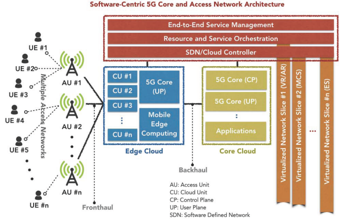
Núcleo 5G centrado em software, com controle SDN e fatias de rede
5G NSA rádio 5G sobre núcleo 4G (EPC); o eNB 4G ancora o controle — transição.
5G SA SBA : funções de rede como microsserviços (AMF, SMF, PCF…).CUPS : o SMF (controle) programa a UPF (dados) via PFCP/N4 — o mesmo papel controlador → switch.
Consequência UPF na borda (MEC), fatiamento de rede, QoS por fluxo (5QI).
O 5G não exige OpenFlow, mas aplica o princípio do SDN: separar controle e dados e programar o plano de dados. NSA reaproveita o núcleo 4G; SA é nativo em nuvem. (1 min 40)
Como um provedor orquestra a rede
Intenção “circuito de 10 Mbps, < 30 ms entre A e B” — API REST/JSON
Orquestração traduz a intenção num modelo (YANG/TOSCA), calcula caminho e recursos — ex.: ONAP
Controle controladores por domínio (ex.: ONOS) — sabem como fazer dentro do domínio
Mediação adaptadores para OpenFlow, NETCONF, PCEP, SNMP de cada fabricante
Dados switches, roteadores, VNFs — só executam as regras
O orquestrador sabe 'o quê e para quem'; o controlador sabe 'como'. ONAP nasceu da fusão do ECOMP (AT&T) com o OPEN-O (China Mobile). O FLOWPRI e o QCTP vivem na camada de controle. (1 min 20)
Fluxos e Qualidade de Serviço
1 Redes de computadores e SDN no mundo real2 Fluxos e Qualidade de Serviço3 Arquitetura SDN: controlador, interfaces, OpenFlow e P44 Gerenciamento de redes: convencional × SDN5 QoS em redes SDN6 FLOWPRI-SDN7 QCTP: levando o QoS ao transporte8 Fechamento Agora o problema central: fluxos competindo.
Recursos são finitos: fluxos disputam o enlace
Animação: dois fluxos, um enlace de 10 Mbps. Quando a soma passa da capacidade, a fila do switch cresce (atraso, jitter) e enche (perda). Toda métrica de QoS nasce aqui. (1 min 20)
Quem age quando há congestionamento?
O administrador superdimensiona, cria filas, prioriza, reserva banda — decide antes .
O protocolo de transporte o TCP reduz a janela depois de perder pacotes (AIMD, slow start) — reage.
Os dois não conversam: o TCP não sabe que existe reserva.
Vídeo do controle de congestionamento do TCP (dente de serra). Essa 'cegueira' é a motivação do QCTP no fim da aula. (1 min 30)
Prioridade × requisitos: duas perguntas diferentes
Prioridade — quem é mais importante?
>
E-mail do hospital com um exame urgente vale mais que um e-mail promocional — mesmo tipo de tráfego, importância diferente.
Requisitos — do que o fluxo precisa?
≠
Vídeo precisa de banda constante e atraso baixo; e-mail tolera segundos de atraso — natureza diferente.
QoS precisa das duas: classe (requisito) e prioridade dentro da classe.
Exemplo do rascunho (hospital × e-mail; vídeo × e-mail), agora separando os dois eixos. O FLOWPRI usa exatamente isso: classe de serviço + 3 prioridades por classe. (1 min 20)
O que é um fluxo?
Definição Sequência de pacotes com a mesma 5-tupla : IP origem, IP destino, porta origem, porta destino e protocolo.
Formas
subfluxo : janela de N pacotes (ou T segundos) usada para classificarelefante (longo, muitos bytes) × rato (curto)contínuo (vídeo ao vivo) × on/off (navegação, rajadas)uni ou bidirecional (ida + ACKs)
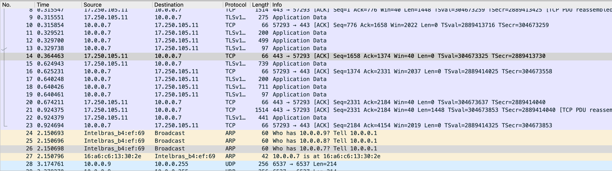
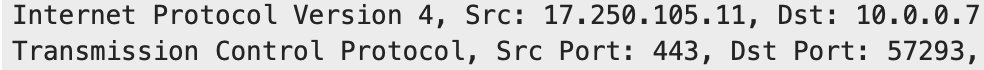
Captura no Wireshark: os pacotes de um mesmo fluxo compartilham a 5-tupla
Mostrar que o switch enxerga pacotes, não aplicações: precisa agrupar em fluxos para tratá-los. (1 min 30)
Métricas de QoS
Métrica Definição Quem sofre Atraso (one-way)tempo do envio de um pacote até sua chegada ao destino voz, jogos, cirurgia remota Jitter variação do atraso entre pacotes consecutivos voz e vídeo ao vivo Vazão taxa efetivamente entregue ao destino streaming, downloads Largura de banda capacidade necessária (ou reservada) para o fluxo todos — é o recurso disputado Perda fração de pacotes que não chega (descarte, erro) tempo real (sem retransmissão) Tempo de resposta tempo que o usuário espera numa interação web, aplicações interativas
QoS = conjunto de mecanismos para melhorar desempenho e confiabilidade da transmissão. Diferenciar taxa gerada (aplicação), banda (enlace/reserva) e vazão (o que chega). (1 min 30)
Onde cada métrica nasce
Causa Onde Métricas afetadas Fila do switch/roteador cresce rede (buffer de saída) atraso ↑, jitter ↑ Fila cheia → descarte (tail drop) rede perda ↑ → TCP reduz a taxa → vazão ↓ Erro de bit no meio físico (rádio, cabo) enlace perda ↑, retransmissões → atraso ↑ Caminhos diferentes / balanceamento rede reordenação → TCP interpreta como perda; jitter ↑ Buffer do emissor / janela pequena host emissor vazão ↓ mesmo com rede livre Aplicação receptora lenta (buffer cheio) host receptor controle de fluxo freia o emissor → vazão ↓ Distância (propagação) e serialização física atraso mínimo fixo — nenhum QoS reduz
Gerenciar recursos atua nas linhas da rede; o transporte atua nas linhas do host.
Atende à nota do rascunho ('a relação entre as causas e as métricas'). Perguntar à turma: quais destas o administrador consegue resolver com filas? (as duas primeiras). (1 min 40)
Requisitos por aplicação: quem define?
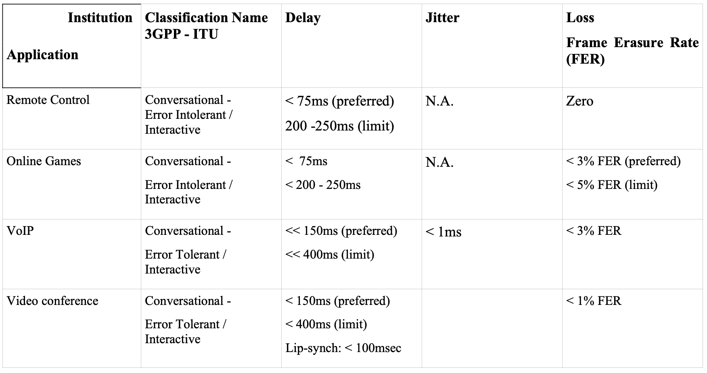
Requisitos de atraso, jitter e perda por classe de aplicação (3GPP/ITU)
Padrões
ITU-T G.1010 : categorias de QoS para multimídiaITU-T Y.1541 : objetivos de desempenho para IP3GPP TS 23.501 : 5QI — perfil de QoS por fluxo no 5G Os valores evoluem: aplicações novas (XR, cirurgia remota) pedem atrasos cada vez menores.
As métricas não são inventadas por cada operador: vêm de 3GPP/ITU. Exemplo: voz interativa ~150 ms fim a fim é um limite clássico. (1 min 20)
QoS × QoE
Mesmo vídeo com perda de pacotes
QoS se mede na rede (ms, %, Mbps). QoE é a percepção do usuário (ex.: nota MOS de 1 a 5, ITU-T P.800). Bom QoS é condição para boa QoE — o usuário não vê “2 % de perda”, vê o vídeo quebrado.
Mostrar as duas imagens e perguntar o que aconteceu na rede. Perda em vídeo sem retransmissão vira artefato visual. (1 min 10)
Exercício rápido: prioridade e requisitos
Para cada fluxo: qual classe? qual prioridade? qual métrica mais importa?
Fluxo Classe Prioridade Métrica crítica Cirurgia remota (vídeo + comandos) Chamada VoIP Netflix Backup noturno de 2 TB E-mail com laudo de exame urgente
2 minutos em duplas. Respostas esperadas: cirurgia = tempo real, prioridade máxima, atraso/perda; VoIP = tempo real, atraso/jitter; Netflix = não-tempo-real (buffer), banda; backup = best-effort, vazão; e-mail urgente = best-effort/NRT com prioridade alta — requisito baixo, importância alta. (2 min)
Arquitetura SDN: controlador, interfaces, OpenFlow e P4
1 Redes de computadores e SDN no mundo real2 Fluxos e Qualidade de Serviço3 Arquitetura SDN: controlador, interfaces, OpenFlow e P44 Gerenciamento de redes: convencional × SDN5 QoS em redes SDN6 FLOWPRI-SDN7 QCTP: levando o QoS ao transporte8 Fechamento Agora a ferramenta: como o SDN permite agir nesses fluxos.
Arquitetura SDN
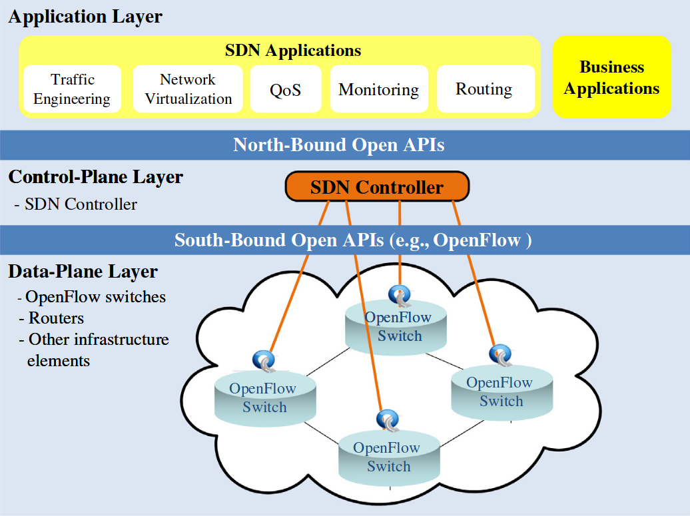
Camadas de aplicação, controle e dados
Propriedades
desacoplamento controle × dadoshardware comum (silício comercial)dinamismo : regras mudam em msprogramabilidade : rede via API Três camadas, duas interfaces: northbound (apps ↔ controlador) e southbound (controlador ↔ switches). (1 min 20)
Controlador SDN
O “sistema operacional” da rede
visão global da topologia e do estado
executa aplicações: roteamento, balanceamento, monitoramento, QoS
programa as tabelas de encaminhamento dos switches
exemplos: POX, Ryu, Floodlight, ONOS, OpenDaylight
P4 não é controlador: é a linguagem do plano de dados (o controlador fala P4Runtime).
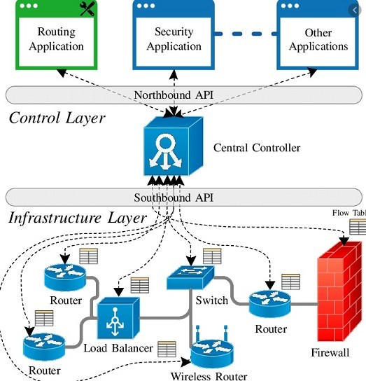
Controlador entre aplicações e infraestrutura
Corrigido do rascunho: P4 saiu da lista de controladores. FLOWPRI usa Ryu; QCTP usa um controlador Python com P4Runtime. Controlador pode ser replicado (ONOS, Orion) para não ser ponto único de falha. (1 min 10)
Interface Northbound
Onde aplicações conversam com o controlador (em geral REST/JSON).
Trocar dados (topologia, estatísticas) e pedir regras.
Apps locais, em nuvem ou em microsserviços; isoladas ou compartilhadas.
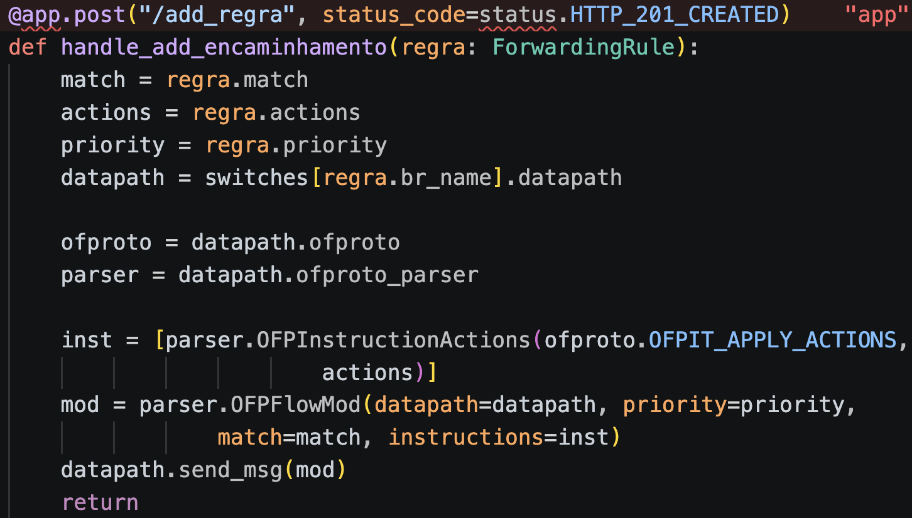
Endpoint REST que instala uma regra (Ryu)
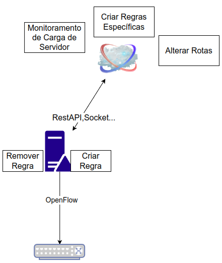
Aplicação de monitoramento cria/remove regras via REST
Exemplo: o FLOWPRI recebe configurações JSON (switches, rotas, hosts) numa porta reservada. (1 min 10)
Interface Southbound
Controlador ↔ switch
mensagens e eventos (pacote novo, porta caiu, regra expirou)
tipos de ação: encaminhar, descartar, remarcar, enfileirar, limitar
OpenFlow : estado de fluxos (tabelas fixas)P4Runtime : tabelas definidas pelo programa P4OVSDB / NETCONF : configuração (portas, filas) 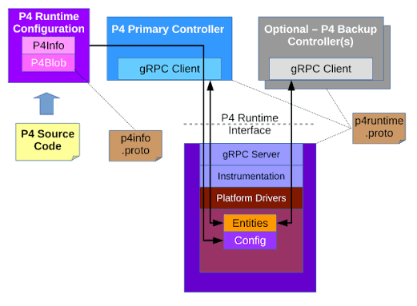
P4Runtime: controlador gRPC ↔ switch
OpenFlow muda o comportamento de encaminhamento; OVSDB/NETCONF configuram o equipamento (ex.: criar filas HTB, que o OpenFlow não cria). (1 min 10)
Protocolo OpenFlow: mensagens
Tipo Mensagens Para quê Simétricas Hello, Echo Request/Reply abrir e manter a sessão Controlador → switch Features, Set-Config, Flow-Mod , Meter-Mod , Group-Mod, Packet-Out, Multipart (estatísticas) programar e consultar o switch Assíncronas (switch → controlador)Packet-In , Flow-Removed, Port-Status, Erroravisar eventos
Configuração do equipamento fica fora do OpenFlow: OVSDB (Open vSwitch) ou NETCONF .
Destacar Packet-In (switch pergunta) e Flow-Mod (controlador responde) — o par que aparece na animação seguinte. Flow-Removed é o que o FLOWPRI usa para liberar banda quando a regra expira. (1 min 20)
Tabelas de fluxo
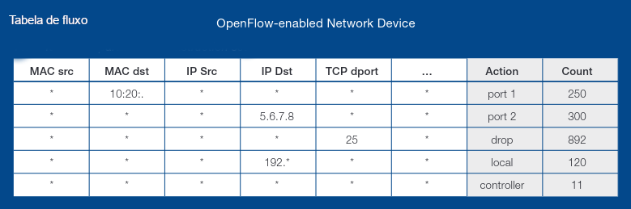
Tabela de fluxo: campos de match, ação e contadores
Uma regra tem
match (campos do cabeçalho) e prioridade instruções : ações, meter, goto-tablecontadores (pacotes, bytes)timeouts : idle e hard
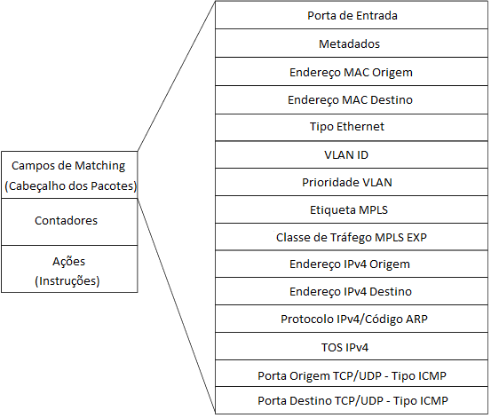
Campos de match do OpenFlow (L2 a L4)
Match em L2–L4: MAC, VLAN, IP, ToS, portas. Os timeouts são usados pelo FLOWPRI (idle 2 s, hard 5 s). (1 min 20)
O pipeline OpenFlow em ação
Pacote conhecido: tabela 0 → meter → tabela 1 → fila e porta. Pacote novo: table-miss → Packet-In → controlador decide → Flow-Mod. (1 min 20)
Tabela de meters
Meter (OpenFlow 1.3+)
identificador único, referenciado pela regracontadores de pacotes/bytesbanda : rate (kbps) + tipo: drop ou remarcar DSCP acima da taxa → descarta: policing
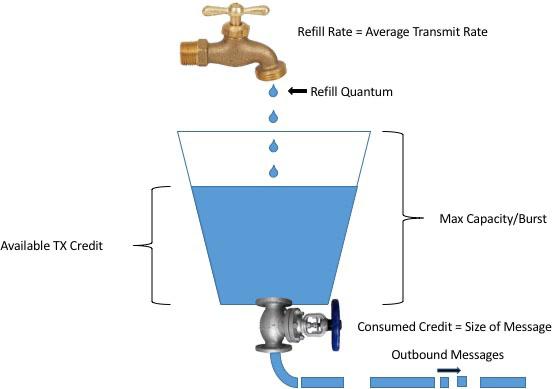
Token bucket: créditos repostos à taxa média; rajada limitada
Meter = limitador de taxa por fluxo. Não guarda pacotes (isso é fila); descarta o excesso. É o que impede um fluxo reservado de passar da reserva. (1 min 20)
P4: programando o plano de dados
OpenFlow × P4
OpenFlow: campos e ações fixos no protocolo
P4: o programador define parser , tabelas e deparser — independente de protocolo
compilado para o alvo (BMv2, Tofino); p4info descreve as tabelas para o P4Runtime
permite cabeçalhos novos (QCTP) e telemetria in-band (INT) parser → match-action (ingress) → match-action (egress) → deparser
// qctp_switch/qctp.p4 (trecho)
meter (MAX_FLOWS, MeterType.bytes) flow_meter;
table qctp_flow {
key = {
hdr.ipv4.srcAddr: exact;
hdr.ipv4.dstAddr: exact;
hdr.qctp.flow_id: exact;
}
actions = { qos_forward; NoAction; }
}
// qos_forward marca DSCP, escolhe a fila
// e, na borda, policia granted_kbps
Trecho real do switch do QCTP. A mesma ideia do OpenFlow (tabela + meter), mas a chave inclui um campo de um cabeçalho que não existe no OpenFlow (flow_id do QCTP). (1 min 40)
Gerenciamento de redes: convencional × SDN
1 Redes de computadores e SDN no mundo real2 Fluxos e Qualidade de Serviço3 Arquitetura SDN: controlador, interfaces, OpenFlow e P44 Gerenciamento de redes: convencional × SDN5 QoS em redes SDN6 FLOWPRI-SDN7 QCTP: levando o QoS ao transporte8 Fechamento SDN não substitui o gerenciamento clássico: complementa.
Os pilares do gerenciamento: FCAPS
Área Objetivo Exemplo F alhasdetectar, isolar, registrar e corrigir anomalias alarme de enlace caído, análise de logs C onfiguraçãoinventário, backup e versão de configurações, provisionamento trocar a VLAN de 50 switches C ontabilização (Accounting )medir o uso por usuário/serviço para cobrança e cotas volume trafegado por cliente D esempenho (Performance )monitorar vazão, atraso, perda e utilização enlace a 90 % no horário de pico S egurançacontrole de acesso, autenticação, auditoria quem alterou a regra do firewall?
Modelo ISO/IEC 7498-4 (e ITU-T M.3400). QoS toca principalmente Desempenho , Contabilização e Configuração .
O rascunho tinha parágrafos longos; aqui uma linha por área. (1 min 20)
SNMP
Simple Network Management Protocol
gerente (NMS) consulta agentes nos equipamentosMIB : base hierárquica de objetos (OIDs), descrita pela SMI operações: Get, Set, Trap (alerta do agente)
RMON : estatísticas de tráfego coletadas no próprio equipamentov3 adiciona autenticação e criptografia
# contador de bytes da interface 2
snmpget -v2c -c public 10.0.0.1 \
IF-MIB::ifInOctets.2
IF-MIB::ifInOctets.2 = Counter32: 918273
Na prática Zabbix, Prometheus (exporter SNMP), PRTG, Nagios, SolarWinds — cumprem o FCAPS com SNMP, RMON e NetFlow/IPFIX.
SNMP consulta e altera o estado interno de um dispositivo. Ótimo para contadores; ruim para configuração em massa (Set é pouco usado). (1 min 20)
Configurar × programar × descobrir
OpenFlow NETCONF / YANG BGP-LS Propósito programar tabelas de encaminhamento configurar e gerenciar dispositivos levar a topologia (OSPF/IS-IS) ao controlador Estado volátil (memória do switch) persistente (configuração salva) estado da rede, dinâmico Abstrai a tabela de fluxo a CLI e a base de configuração a base link-state dos IGPs Ideal para funções novas, temporárias, por fluxo funções existentes, manutenção redes grandes, multi-domínio
NETCONF (RFC 6241) troca dados XML modelados em YANG (RFC 7950): “o app de configurações do celular” da rede.
Tabela do relatório 'Da caixa preta à rede programável'. Provedores usam os três juntos: NETCONF configura, OpenFlow/P4 programa, BGP-LS informa a topologia. (1 min 30)
NetFlow / IPFIX: observar o tráfego
O equipamento (exportador ) agrega pacotes em registros de fluxo e os envia a um coletor .
Quem fala com quem, quanto, por qual porta e protocolo.
Só observa — não altera nada (“extrato da conta telefônica”).IPFIX (RFC 7011) é o padrão IETF; sFlow faz amostragem.
NetFlow / IPFIX NETCONF Função monitorar tráfego configurar dispositivos Direção dispositivo → coletor gerente → dispositivo Formato registros binários de fluxo XML / YANG Altera o equipamento? não sim
NetFlow observa; NETCONF configura. Contabilização e classificação de tráfego começam nos registros de fluxo. (1 min 10)
Equivalência funcional no Open vSwitch
Necessidade (gerência clássica) SNMP / NETCONF / NetFlow Open vSwitch / OpenFlow contadores de interface IF-MIB::ifInOctetsovs-ofctl dump-ports br0estado das portas ifOperStatusovs-ofctl dump-ports-desc br0tabela MAC BRIDGE-MIB (dot1dTpFdb) ovs-appctl fdb/show br0contadores por fluxo NetFlow / IPFIX ovs-ofctl dump-flows br0taxa por fluxo (policiamento) — ovs-ofctl -O OpenFlow13 meter-stats br0configuração (portas, filas) NETCONF / CLI ovs-vsctl (OVSDB)exportar fluxos NetFlow / sFlow ovs-vsctl -- set Bridge br0 netflow=@nf …
Não há equivalência 1:1 de mensagens, mas há equivalência funcional : SDN e SNMP são complementares.
Baseado na tabela do rascunho (OVS ↔ SNMP). O OVS também exporta NetFlow/sFlow/IPFIX nativamente — dá para usar o NMS de sempre numa rede SDN. (1 min 40)
QoS em redes SDN
1 Redes de computadores e SDN no mundo real2 Fluxos e Qualidade de Serviço3 Arquitetura SDN: controlador, interfaces, OpenFlow e P44 Gerenciamento de redes: convencional × SDN5 QoS em redes SDN6 FLOWPRI-SDN7 QCTP: levando o QoS ao transporte8 Fechamento Juntando: como implementar QoS com SDN, aproveitando o que as redes convencionais já têm.
Modelos de QoS das redes convencionais
Modelo Ideia Limitação Best-effort todos iguais; a fila é FIFO nenhuma garantia IntServ (RFC 1633) + RSVPreserva por fluxo em cada roteador do caminho estado por fluxo em todo roteador → não escala DiffServ (RFC 2475)marca o pacote (DSCP) na borda; o núcleo trata por classe sem garantia por fluxo; marcação não atravessa domínios com confiança
Ferramentas comuns aos três: filas , túneis e limitadores (meters) .
SDN não inventa QoS novo: reaproveita filas, marcação e túneis, mas com um controlador que vê tudo. (1 min 10)
IntServ e RSVP
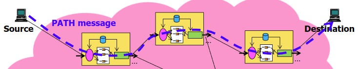
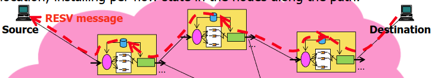
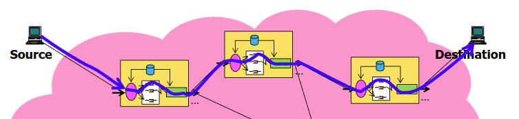
1. PATH da origem descobre o caminho · 2. RESV do destino reserva em cada salto · 3. os dados seguem pela reserva.
Mesmo padrão de sinalização que o FLOWPRI (FRED) e o QCTP (SYN com FRED) usam — mas lá quem reserva é o controlador, não cada roteador. (1 min 10)
DiffServ e DSCP
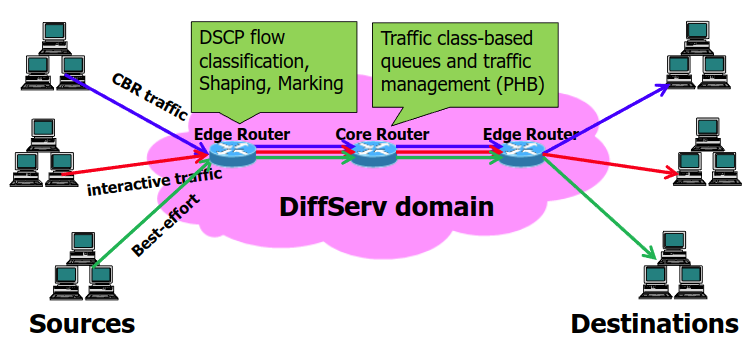
Domínio DiffServ: a borda classifica e marca; o núcleo aplica o PHB
Como funciona
campo DSCP : 6 bits do antigo ToS (IPv4) / Traffic Class (IPv6)
cada código define um PHB (comportamento por salto)
EF (46): baixa latência — vozAF xy: 4 classes × 3 precedências de descarteCS 0–7: compatível com IP Precedence; CS0 = best-effortagrega fluxos com o mesmo requisito O FLOWPRI define códigos DSCP para as suas classes de tempo real e não-tempo-real (tabelas 2 e 3 da dissertação). O QCTP marca DSCP no P4. (1 min 20)
Remarcação e encapsulamento
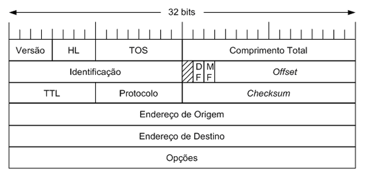
IPv4: ToS/DSCP remarcável pelo switch
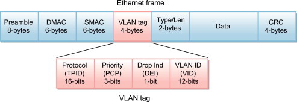
VLAN 802.1Q: prioridade PCP (3 bits) + VID
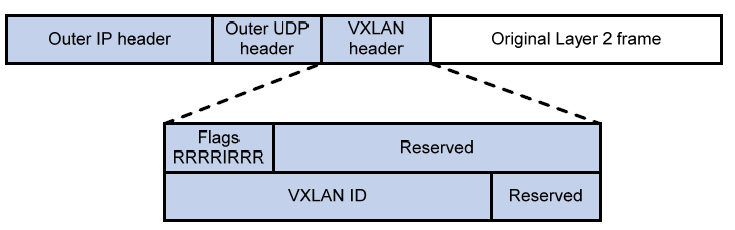
VXLAN: quadro L2 dentro de UDP (overlay)
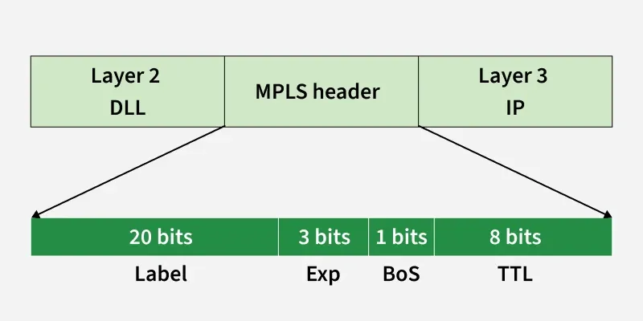
MPLS: rótulo de 20 bits + 3 bits de classe
Em SDN, uma ação de regra muda esses campos (set_field). Remarcar = dizer aos próximos saltos como tratar; encapsular = isolar ou levar por um túnel. (1 min 20)
Limitar a taxa: meter × fila
Meter — policing
mede a taxa do fluxo e descarta (ou remarca) o excesso
não tem buffer: não adiciona atraso
por fluxo, na borda
OpenFlow: Meter-Mod; P4: meter Fila — shaping
guarda o excesso e o envia depoissuaviza rajadas, mas adiciona atraso
por classe, em cada porta
Linux/OVS: tc HTB via ovs-vsctl
Combinados: o meter impede o fluxo de passar da reserva; a fila garante a banda da classe.
Distinção que costuma confundir: policing descarta, shaping atrasa. FLOWPRI e QCTP usam os dois. (1 min 20)
Filas HTB: garantia e empréstimo
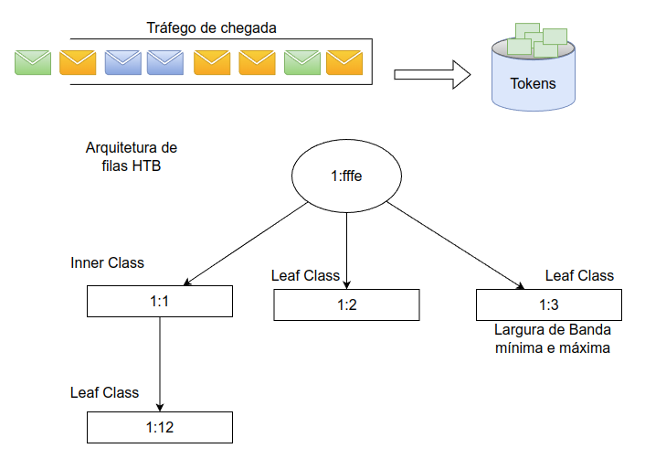
Hierarquia HTB: raiz → classes internas → folhas, cada uma com rate (mínimo) e ceil (máximo)
HTB (Hierarchical Token Bucket, Devera): cada classe tem rate garantido e ceil; banda ociosa é emprestada e devolvida quando o dono volta. Percentuais do FLOWPRI: CTRL 7, RT 33, NRT 35, BE 25. (1 min 20)
Balanceamento e telemetria
Balanceamento de carga
redirecionar fluxos por caminhos diferentes
OpenFlow group table (tipo select )
engenharia de tráfego centralizada (B4) Telemetria
contadores de portas , filas e regras (Multipart)
regras de monitoramento dedicadas
INT (P4): cada switch escreve seu estado no próprio pacote Sem medir não há como saber se o QoS foi entregue. O INT é usado pelo QCTP; o FLOWPRI usa regras de monitoramento na borda. (1 min)
Classificação de tráfego: como saber o que é cada fluxo?
Abordagem Como Problema Portas (IANA)porta 443 = HTTPS, 5060 = SIP… portas dinâmicas e tudo sobre 443 → baixa precisão Inspeção de payload (DPI)busca padrões nos bytes de dados caro; não funciona com tráfego criptografado Auto-identificação a aplicação declara o que é exige confiança e suporte do host (é o caminho do QCTP) Estatísticas do fluxo + ML tamanhos, intervalos, flags dos primeiros N pacotes precisa de dados rotulados e treino
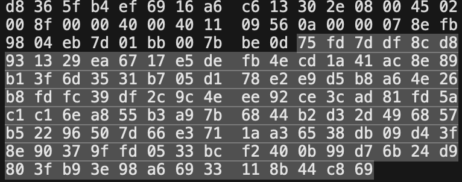
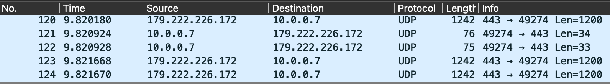
Com TLS em quase tudo, DPI enxerga só bytes aleatórios (imagem da esquerda). As estatísticas do fluxo (direita) continuam visíveis. (1 min 20)
Árvores de decisão e Random Forest
Ideia
árvore : cada nó é uma pergunta sobre uma feature (“tamanho médio > 900 B?”)cada pergunta deve reduzir a entropia (desordem) do conjunto — ID3
folha = classe prevista
Random Forest : muitas árvores treinadas em amostras aleatórias; a votação deciderápida para classificar → cabe no controlador 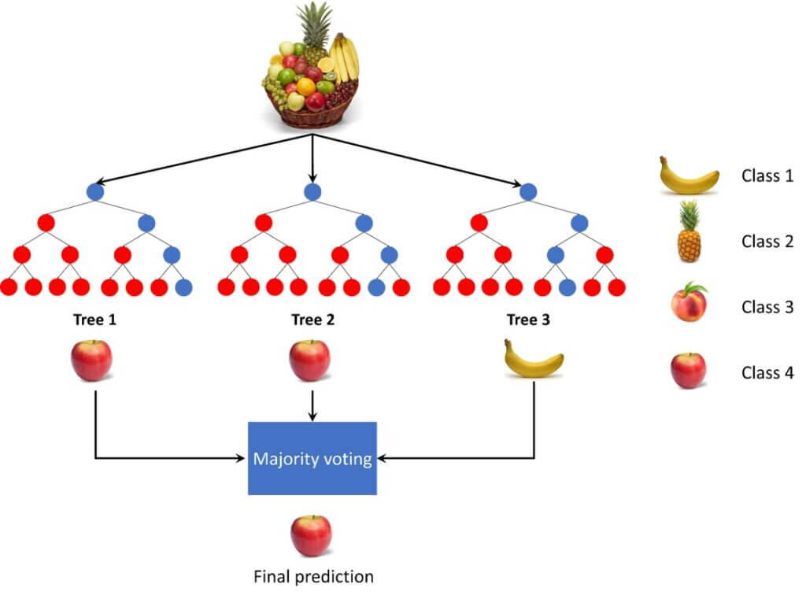
Random Forest: três árvores votam na classe final
Breiman (2001). Vantagem para redes: inferência barata e interpretável. (1 min 10)
Exercício: qual mecanismo usar?
Associe cada situação a um mecanismo (meter, fila HTB, DSCP, VLAN/VXLAN, group table, ML)
Um cliente contratou 20 Mbps e não pode passar disso.
A voz deve ter prioridade em todos os roteadores do backbone.
O backup deve usar a banda que sobrar, sem atrapalhar ninguém.
Dois clientes usam o mesmo prefixo IP privado no datacenter.
Dois enlaces paralelos: um a 95 %, outro a 10 %.
O tráfego é todo HTTPS na porta 443 e precisamos saber o que é vídeo. Respostas: 1 meter; 2 DSCP (EF); 3 fila BE do HTB (empréstimo/ceil); 4 VXLAN/VLAN; 5 group table select / engenharia de tráfego; 6 classificação por ML. (1 min 40)
FLOWPRI-SDN
1 Redes de computadores e SDN no mundo real2 Fluxos e Qualidade de Serviço3 Arquitetura SDN: controlador, interfaces, OpenFlow e P44 Gerenciamento de redes: convencional × SDN5 QoS em redes SDN6 FLOWPRI-SDN7 QCTP: levando o QoS ao transporte8 Fechamento Um framework que junta tudo isso: classificação, reserva, multi-domínio e auditoria.
FLOWPRI-SDN
Framework de gerenciamento de recursos
multi-domínio : cada AS tem seu controladorclassifica o tráfego (ML) → requisitosreserva banda por fluxo, com prioridade QoS como serviço , auditável (QoSBlockchain) Versão 1.0: Mocelin Jr. e Fiorese (2023). Versão 2.0: dissertação de mestrado (UDESC, 2025), sobre Ryu + OVS.
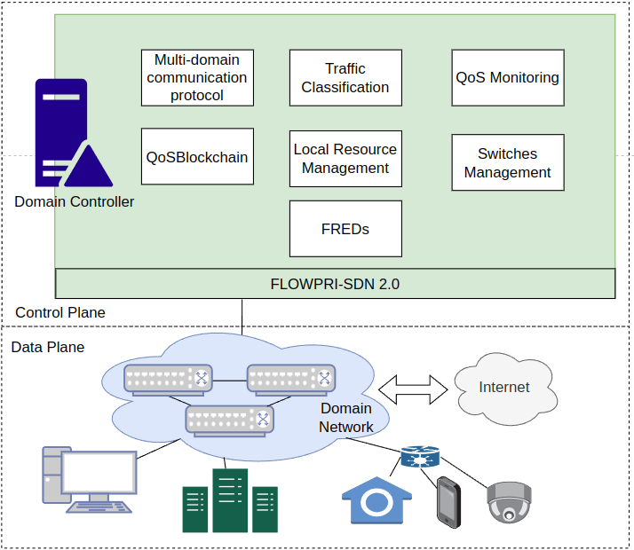
Arquitetura do FLOWPRI-SDN 2.0: módulos no controlador e plano de dados
Módulos: gerência de switches, gerência local de recursos (G-BAM), classificação, comunicação multi-domínio, monitoramento de QoS, QoSBlockchain. (1 min 20)
FRED: o documento de requisitos do fluxo
Flow Requirements Document
identificação : 5-tupla e versão IPQoS : classe, prioridade, banda, atraso, jitter, perda, rótuloblockchain : nome, faixas de IP dos ASs, nó gênese, parescode : 1 = aceito, −1 = rejeitado Gerado quando um fluxo novo é classificado e enviado a todos os domínios da rota. O QCTP reaproveita o FRED, mas quem o declara é o próprio host.
FRED é a 'intenção' do fluxo. Exemplo da dissertação: classe real-time, 2 Mbps, delay 30 ms, rótulo ae-2Mbps. (1 min 20)
Filas e G-BAM
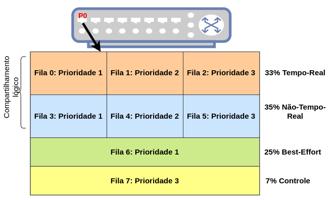
Por porta: 3 filas de prioridade em RT (33 %) e NRT (35 %), BE (25 %) e controle (7 %)
G-BAM: alocação de banda
pega a classe do FRED e verifica a banda livre nas portas de toda a rota
se faltar, remove fluxos que estão emprestando na classe
se ainda faltar, empresta da outra classe QoS
se não der, remove fluxos de menor prioridade
senão, rejeita o FRED (code −1) → best-effort
Backbone: agrega por classe (regras conjuntivas) em vez de regra por fluxo.
HTB empresta a banda ociosa para o BE sem reserva; o G-BAM controla o empréstimo entre as classes QoS. Backbone não policia por fluxo: a borda já limitou. (1 min 30)
Programação das tabelas e regras meter
Regra QoS
regra de encaminhamento + meter com a banda do FRED
envia para a fila da classe/prioridade e marca DSCP
idle timeout 2 s , hard timeout 5 s → renovação periódicadesconta a banda da classe nas portas de entrada e saída Regra best-effort
sem meter: só envia para a fila BE
mesmos timeouts → o fluxo pode ser reclassificado
Remoção
ativa (controlador manda) ou passiva (timeout)Flow-Removed → libera a banda na rota e apaga meter e FRED Regras de monitoramento: regras QoS com cookie = 1, só no primeiro switch, para medir o QoS entregue. (1 min 20)
Classificação de tráfego no FLOWPRI
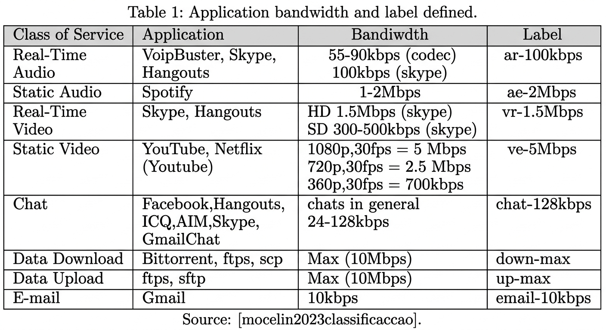
Classes: aplicação, banda e rótulo
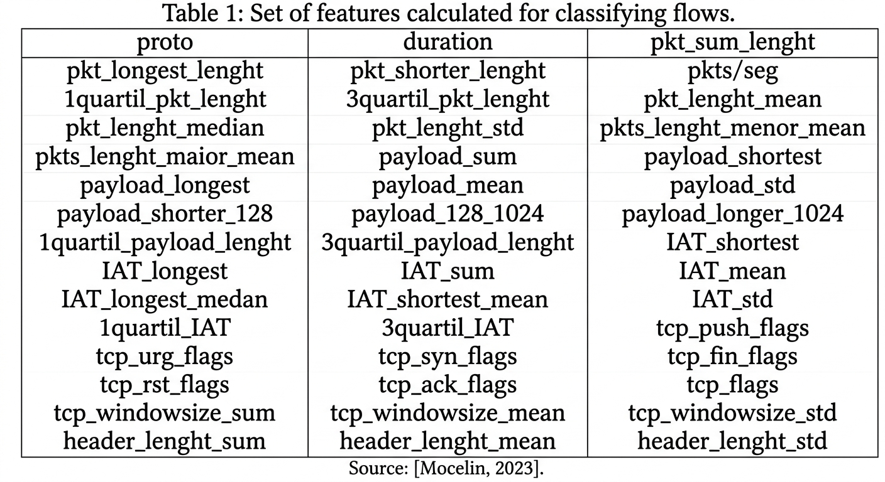
Features calculadas por amostra de fluxo
98 % precisão do Random Forest em subfluxos de 10 pacotes, 8 classes de QoS
Analisar em batch (amostras), não pacote a pacote; separar TCP/UDP ajuda (XGBoost chega a 99 % em TCP).
Resultados da dissertação (cap. 5). Rótulo = classe de aplicação + banda (ex.: ae-2Mbps = áudio estático). (1 min 30)
Fluxo da classificação
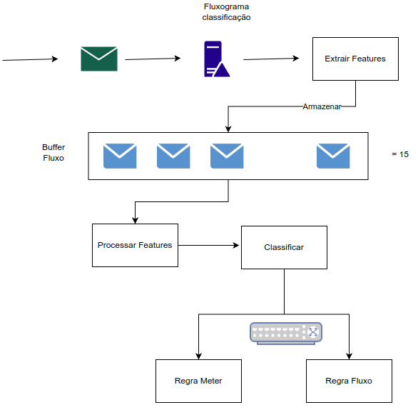
Pacote novo → buffer de N pacotes → features → classificador → regra QoS ou BE
Passo a passo
primeiro pacote: regra BE temporária
espelha N pacotes ao controlador
extrai features e classifica
gera o FRED → G-BAM
instala regra QoS (com meter) ou mantém BE O fluxo nunca fica parado esperando o classificador: começa em best-effort. (1 min)
Comunicação inter-domínio: ICMPv6 139/140
Por que ICMP?
atravessa a rota com os mesmos IPs do fluxo
ICMPv6 139 (NI Query) leva o FRED; 140 informa rejeição
IPv4: tipos 15/16
cada controlador o recebe por Packet-In O FRED segue o mesmo caminho dos dados, então cada domínio da rota fica sabendo. Rejeição (140) volta à origem e todos os domínios anteriores liberam a reserva. ICMPv6 NI: RFC 4620. (1 min 40)
QoSBlockchain v1 (Hyperledger Sawtooth)
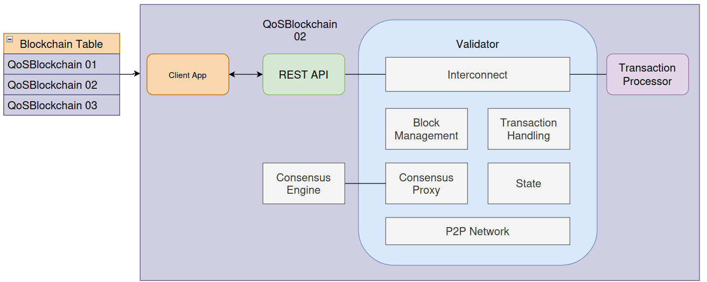
Nó Sawtooth: REST API, validador, consenso, transaction processor
Quem participa
uma blockchain por par de domínios de borda
pares: os 2 controladores FLOWPRI + 1 host de gerência de cada domínio
50 % clientes, 50 % operadores: ninguém controla sozinho
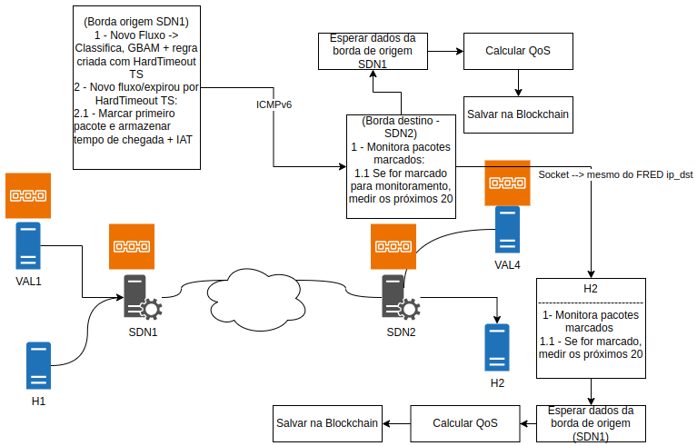
Borda de origem e destino medem e registram o QoS
Registra o FRED e as medições de QoS ao longo do tempo; o cliente consulta o histórico e prova violações do SLA.
Resposta à pergunta do ISP: quem prova que o SLA foi cumprido? No QCTP a ideia continua (camada de auditoria), mas o ledger hoje é um mock com cadeia de hashes. (1 min 30)
QCTP: levando o QoS ao transporte
1 Redes de computadores e SDN no mundo real2 Fluxos e Qualidade de Serviço3 Arquitetura SDN: controlador, interfaces, OpenFlow e P44 Gerenciamento de redes: convencional × SDN5 QoS em redes SDN6 FLOWPRI-SDN7 QCTP: levando o QoS ao transporte8 Fechamento Ponte: o FLOWPRI reserva banda, mas o transporte do host continua cego.
Do FLOWPRI ao transporte: o que falta
O FLOWPRI reserva 5 Mbps para o fluxo… e o TCP envia 3 (desperdiça) ou 7 (o meter descarta).
Lacuna 1 Transporte e QoS são cegos um ao outro
Lacuna 2 Nenhum transporte negocia QoS no handshake
Lacuna 3 Não há auditoria fim a fim no nível do transporte
Caso de uso Precisa de Problema hoje Telemedicina (cirurgia remota)10 Mbps, < 20 ms, perda < 1 % TCP/QUIC não garantem; congestionamento põe o procedimento em risco Videoconferência corporativa 2 Mbps por participante, < 150 ms trava no pico; não há como provar que o SLA falhou Cloud gaming 25 Mbps, < 20 ms, jitter < 10 ms o dente de serra do TCP vira lag
As três lacunas do doutorado. Casos de uso: telemedicina, videoconferência corporativa, cloud gaming. (1 min 20)
QCTP: o que é
Transporte sobre UDP em que host e rede negociam a reserva no handshake e a mantêm sincronizada.
5 · Intenção o host declara o intent (video-call, voip…) → FRED
4 · Negociação SYN leva o FRED; o controlador admite (G-BAM), faz contra-oferta ou cai para best-effort
3 · Sincronização o host ajusta a taxa à reserva (100 ms); o controlador ajusta a reserva ao uso (1 s); INT
2 · Auditoria violações e relatórios num ledger — hoje um mock (cadeia de hashes), não um Sawtooth
1 · Plano de dados P4: classifica, policia (meter), carimba a reserva, insere INT
Corrigido do rascunho: não é o controlador que ajusta janela/pacing; o host controla a taxa (laço rápido) e o controlador só muda a reserva (laço lento). A blockchain é mock nesta versão. (1 min 20)
Arquitetura implementada (1/2): os atores Desenvolvimento
h1 emissor
FRED no SYN envia em R
s1 borda
policia (meter) carimba reserva
s2 núcleo
fila da classe só reduz + INT
s3 borda
fila da classe só reduz + INT
h3 receptor
mede taxa, atraso e perda
dados QCTP sobre UDP: a rede escreve a reserva atual em cada pacote
Controlador QCTP (Python + P4Runtime)
Sinalização
SYN, RENEG, AUDIT, FIN
Admissão G-BAM
reserva por classe, contra-oferta
Closed-loop
lê uso a cada 1 s, ajusta a reserva
regras, meters,
contadores
só a sinalização
sobe; dados nunca
feedback a cada 100 ms: taxa, atraso, jitter, perda, INT e a reserva ecoada
Apresentar em três cliques. 1) Caminho dos dados: h1 envia, s1 policia e carimba a reserva no pacote, s2 e s3 colocam o pacote na fila da classe, só podem reduzir o carimbo e acrescentam INT; h3 mede. 2) Controlador: três módulos — sinalização, admissão G-BAM e closed-loop; fala com os switches por P4Runtime. Só SYN, RENEG, AUDIT, FIN e DISCOVER sobem até ele; dados nunca. 3) O receptor devolve o feedback a cada 100 ms, com a reserva que a rede carimbou: é assim que o host descobre que a reserva mudou. (1 min)
Handshake com negociação Comportamento
Contra-oferta em vez de rejeição: o fluxo B pede 4 e recebe 1,8 (dado real do experimento). Setup ≈ 11 ms. (1 min 10; vídeo ~50 s)
Laço rápido: o host persegue a reserva Comportamento
Sem slow start; recua sob perda/atraso; PI volta para R_res. As curvas são do RateController real. (45 s)
Laço lento: a rede ajusta a reserva ao uso Comportamento
Linha do tempo real do experimento closed_loop. A banda que A não usa vai para B em ~4 s; quando A volta, renegocia. (1 min 10)
Detecção de violação de SLA Experimentos
300 ± 16 ms tempo de detecção, n = 10 (+40 ms injetados, SLA 20 ms)
0 / 10 execuções com falso positivo
0,59 compliance score médio no ledger (≈ 6 violações por execução)
Detecção pelo feedback de 100 ms + 3 amostras. Limitação: o recuo por atraso derruba a taxa até o piso de 10 % mesmo quando o atraso não depende da taxa. (1 min)
Reserva sob congestionamento: QCTP × TCP Experimentos
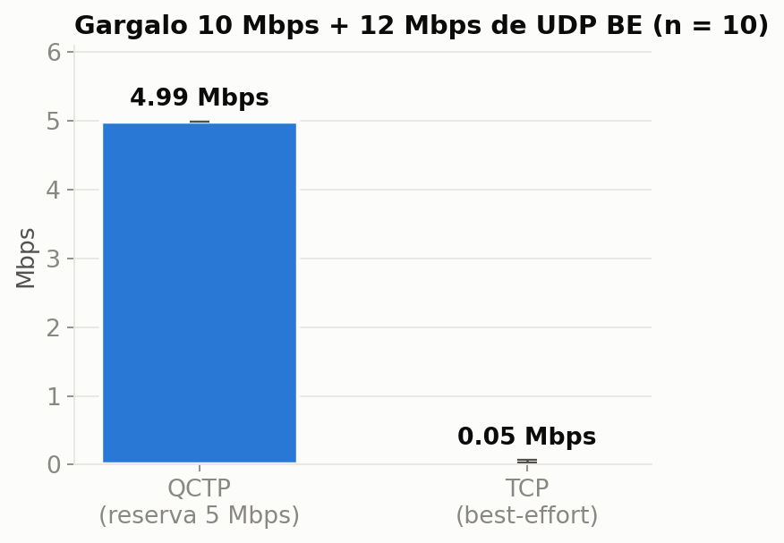
12 Mbps de UDP best-effort inundam um gargalo de 10 Mbps.
4,99 Mbps QCTP com reserva de 5 Mbps · atraso 5,1 ms · perda 0 (n = 10)
0,05 Mbps TCP sem reserva (IC 95 % ± 0,02) — não tem como pedir
O ganho aqui é da reserva + QCTP sincronizado; TCP não tem como entrar na fila RT. (45 s)
Fechamento
1 Redes de computadores e SDN no mundo real2 Fluxos e Qualidade de Serviço3 Arquitetura SDN: controlador, interfaces, OpenFlow e P44 Gerenciamento de redes: convencional × SDN5 QoS em redes SDN6 FLOWPRI-SDN7 QCTP: levando o QoS ao transporte8 Fechamento
Resumo da aula
Conceitos
fluxos disputam enlaces finitos; a fila gera atraso, jitter e perda
prioridade ≠ requisito; QoS se mede na rede, QoE no usuário
SDN separa controle e dados — Google, 5G e provedores já operam assim
SNMP/NETCONF/NetFlow continuam úteis: equivalência funcional com OVS Mecanismos
meter (policing) + fila HTB (shaping) + DSCP/VLAN/VXLAN
classificação por ML (estatísticas do fluxo)
FLOWPRI-SDN: FRED, G-BAM, ICMP inter-domínio, QoSBlockchain
QCTP: o transporte negocia e acompanha a reserva Voltar aos objetivos do início: perguntar à turma qual ficou menos claro. (1 min 50)
Tarefa para casa: QoS numa rede SDN
Laboratório (Mininet + Open vSwitch + Ryu)
Topologia: sudo mn --topo linear,2 --switch ovsk,protocols=OpenFlow13 --controller remote
Crie 2 filas HTB na porta de saída (ovs-vsctl … type=linux-htb … other-config:min-rate/max-rate).
Instale uma regra que envie o fluxo UDP 5001 para a fila 1 (set_queue:1) e o resto para a fila 0.
Adicione um meter de 5 Mbps ao fluxo (ovs-ofctl -O OpenFlow13 add-meter).
Gere tráfego com iperf e compare vazão e perda com e sem fila/meter; entregue gráfico + 1 parágrafo. Substitui o laboratório presencial. Roteiro detalhado e scripts a disponibilizar no Moodle/GitHub. (1 min)
Referências
Kreutz et al. Software-Defined Networking: A Comprehensive Survey. Proc. IEEE, 2015.McKeown et al. OpenFlow: Enabling Innovation in Campus Networks. ACM CCR, 2008.Bosshart et al. P4: Programming Protocol-Independent Packet Processors. ACM CCR, 2014.Jain et al. B4: Experience with a Globally-Deployed Software Defined WAN. SIGCOMM, 2013.Ferguson et al. Orion: Google's Software-Defined Networking Control Plane. NSDI, 2021.Poutievski et al. Jupiter Evolving. SIGCOMM, 2022.3GPP TS 23.501. System architecture for the 5G System.ITU-T G.1010, Y.1541, P.800. QoS categories, IP performance objectives, MOS.RFC 1633 / 2205 / 2475. IntServ, RSVP, DiffServ.RFC 3411 / 6241 / 7950 / 7011. SNMP, NETCONF, YANG, IPFIX.RFC 4620. IPv6 Node Information Queries.Devera, M. HTB: Hierarchical Token Bucket (Linux tc).Breiman, L. Random Forests. Machine Learning, 2001.Mocelin Jr., N. J.; Fiorese, A. FLOWPRI-SDN. 2023.Mocelin Jr., N. J. FLOWPRI-SDN 2.0 (dissertação de mestrado). UDESC, 2025.Relatórios de apoio: SDN em provedores; 5G NSA/SA; SDN do Google. Lista completa em referencias.bib. (20 s)
Nilton José Mocelin Júnior · nilton.junior@edu.udesc.br
github: NiltonMocelin · FLOWPRI-SDN · QCTP
Reservar ~5 min para perguntas.